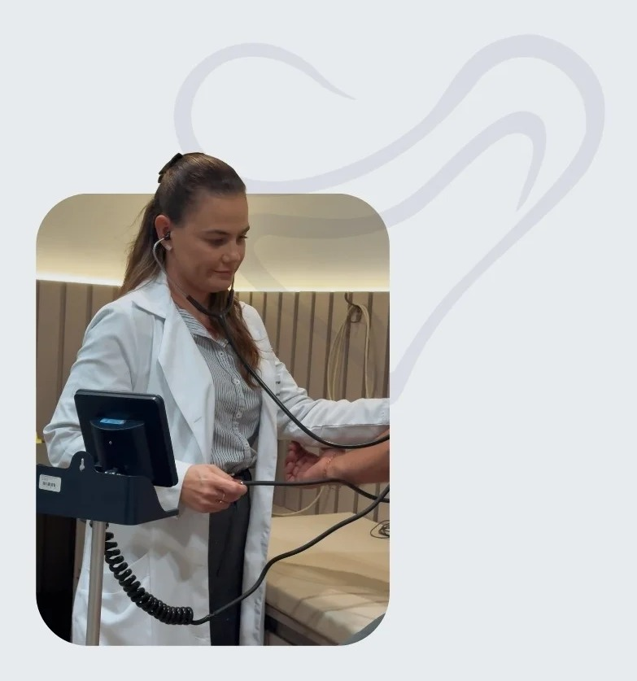
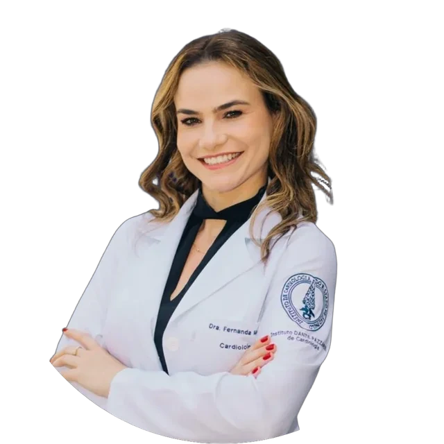
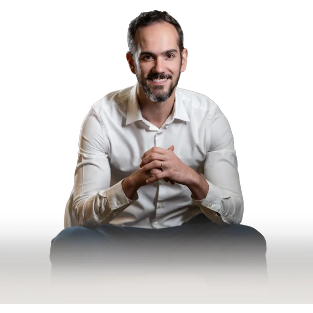

Instituto de Cardiologia de Sorriso
O diagnóstico que muda o tratamento começa pelo exame certo.
O ICS dispõe de arsenal completo de exames cardiológicos — dos métodos diagnósticos de rotina à imagem cardiovascular avançada.
- Arsenal Completo de Exames
- Laudo por Especialista
- Integrado ao Heart Team
- Sorriso – MT

A diferença está em quem interpreta
O laudo de um exame cardiológico vale tanto quanto o exame em si
Fazer um ecocardiograma é uma coisa. Ter esse ecocardiograma avaliado por um cardiologista que domina aquela técnica — que sabe o que procurar, o que questionar e como relacionar a imagem com o quadro clínico — é outra completamente diferente. No ICS, cada exame é interpretado pelo médico com formação específica naquela área.
Diagnóstico mais preciso
Menor índice de falso-negativo e falso-positivo.
Conduta clínica mais rápida
Laudo claro, médico integrado ao Heart Team, decisão mais ágil.
Continuidade do cuidado
O resultado alimenta a discussão clínica do Heart Team dentro da mesma estrutura.
Portfólio de Exames
Todos os exames disponíveis, com laudo especializado
Métodos Diagnósticos (realizados no ICS)
Imagem Cardiovascular Avançada (rede parceira integrada)
Corpo Clínico
Cada exame laudado por quem tem formação naquela área

Ecocardiograma adulto e pediátrico, eco avançado
Ecocardiograma adulto, pediátrico e fetal

ECG, Holter, MAPA, Teste Ergométrico
Angiotomografia e Ressonância Cardíaca

Holter com foco em arritmias complexas

Teste Ergométrico, Ergoespirometria, avaliação de atletas
Agendamento
Agendar seu exame é direto e simples
Com ou sem pedido médico, o agendamento é feito pelo WhatsApp. A equipe orienta sobre preparo, duração e o que levar — para que você chegue sem dúvidas.
Entre em contato pelo WhatsApp
Informe o exame que precisa fazer, com ou sem pedido médico em mãos. A equipe do ICS responde em até 1 hora em horário comercial.
Receba as orientações de preparo
Cada exame tem um preparo específico — jejum, suspensão de medicamentos, uso de roupas confortáveis. A equipe envia todas as instruções antes do agendamento ser confirmado.
Realize o exame no horário marcado
Chegue ao ICS com o pedido médico (se houver), documento de identidade e carteira do convênio. A equipe cuida do resto.
Receba o laudo com clareza
O laudo é emitido pelo cardiologista especializado na área do exame. Se o resultado indicar necessidade de consulta ou investigação complementar, a equipe já orienta o próximo passo dentro do próprio ICS.
O que os números mostram
Fatores de risco silenciosos só aparecem quando investigados
Hipertensão arterial está presente em 30% dos adultos brasileiros sem diagnóstico. Fibrilação atrial assintomática causa AVCs em pessoas que nunca sentiram palpitação. Placas coronárias crescem por décadas antes do primeiro evento. A única forma de identificar essas condições antes que causem dano é com exames realizados no momento certo, e interpretados por quem sabe o que procurar.
Fontes: Ministério da Saúde / DataSUS; Sociedade Brasileira de Cardiologia; ANVISA; REASE 2024; Cochrane Reviews; ACC/AHA Guidelines; OMS / World Heart Federation.
Rede Integrada
Imagem avançada disponível na região, sem precisar viajar
Centros de Imagem
CDI 13 de Maio · CDI Prime · Clínica São Camilo
Hospitais Integrados
Hospital 13 de Maio
Cidades Atendidas
Rede Intercor: Sorriso · Sinop · Lucas do Rio Verde
Quando o exame é realizado em um centro parceiro, o laudo é emitido pelo especialista do ICS — o mesmo médico que pode acompanhar o caso dentro do Heart Team.
Dúvidas frequentes
Perguntas frequentes
Para pagamento particular, a maioria dos exames pode ser realizada sem pedido médico. Para cobertura por convênio ou plano de saúde, o pedido médico é obrigatório. Em caso de dúvida sobre o seu exame específico, entre em contato pelo WhatsApp antes de agendar, nossa equipe orienta sobre o que é necessário para o seu caso.
O prazo varia por exame. Eletrocardiograma e ecocardiograma têm laudo emitido no mesmo dia ou em até 24 horas. Holter e MAPA, após o período de monitorização de 24 horas, têm laudo em até 48 horas. Exames de imagem avançada — angiotomografia e ressonância cardíaca — seguem o prazo do centro parceiro onde são realizados, geralmente de 3 a 5 dias úteis. Nossa equipe informa o prazo específico no momento do agendamento.
Sim. O ICS realiza ecocardiograma pediátrico e ecocardiograma fetal, com médicos capacitados para avaliação em todas as faixas etárias, incluindo recém-nascidos e fetos. Para outros exames em crianças, entre em contato para avaliar a indicação e o preparo adequado para a faixa etária.
Quando o resultado de um exame indica necessidade de avaliação médica ou investigação complementar, a equipe do ICS orienta o próximo passo — seja uma consulta com o cardiologista da área específica, seja um exame complementar dentro da mesma estrutura. O laudo não é o fim do processo; é o começo do cuidado.
Você chegou até aqui por um motivo
O seu exame merece um laudo à altura do que está em jogo.
Em Sorriso, o seu resultado de exame cardiológico não precisa mais esperar uma viagem para ter a interpretação de quem realmente domina aquela área. O ICS tem o especialista, e o Heart Team para decidir o que fazer com o que o exame mostrar.
Agendar pelo WhatsApp